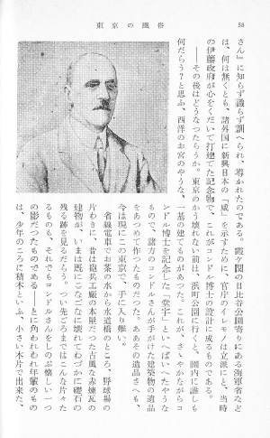
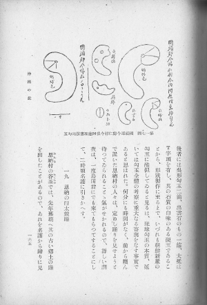
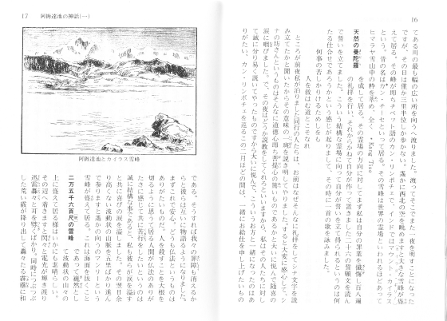
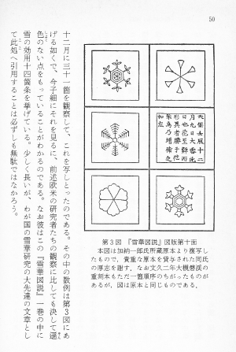

画像とキャプション
写真や図版、挿絵などの画像
本文の理解を図る上で不可欠で、かつ著作権上の問題がないことを確認できる画像は、ファイルにおさめます。
画像を組み入れる際は、次のように注記してください。

▲説明なしで組み込まれた、画像です。
記入例：
…官庁のイレモノは立派にと、当時の伊藤政府が心をくだいて打建てた記念物で、これがコンドル博士の設計に成るものである。
［＃コンドル博士の図（fig47728_06.png、横320×縦322）入る］
――その後はどうなつたらうか。東京のかう壊れない前は、浜町公園に行くと、園内に誰しも何だらう？と思ふ、西洋のお宮のやうな、一基の建てものがあつた。これが、さゝやかながらコンドル博士を記念した「堂宇」といへばいへたやうなもので、諸方のコンドルさんが手がけた建築物の遺品をあつめて作つたものだつた。ああその遺品さへも、今は現にこの東京で、手に入り難い。
…官庁のイレモノは立派にと、当時の伊藤政府が心をくだいて打建てた記念物で、これがコンドル博士の設計に成るものである。<br />
<img class="illustration" width="320" height="322" src="fig47728_06.png" alt="コンドル博士の図" /><br />
――その後はどうなつたらうか。東京のかう壊れない前は、浜町公園に行くと、園内に誰しも何だらう？と思ふ、西洋のお宮のやうな、一基の建てものがあつた。これが、さゝやかながらコンドル博士を記念した「堂宇」といへばいへたやうなもので、諸方のコンドルさんが手がけた建築物の遺品をあつめて作つたものだつた。ああその遺品さへも、今は現にこの東京で、手に入り難い。<br />
●画像の例。木村荘八「東京の風俗」冨山房百科文庫、冨山房、1989（平成元）年8月12日第2刷、88ページ
「コンドル博士の図」にあたる画像の説明を、工夫してください。
画像の種類を示す語は、「図」「地図」「絵」「挿絵」「表」「写真」などを用いてください。
説明を思いつかないときは、単に「挿絵１」「挿絵２」、「写真１」「写真２」などとしてもかまいません。
「１」「２」「３」などの数字は、２バイト（全角）のものを用いてください。
「10」以降は、１バイト（半角）のものを用いてください。
底本が画像に説明文（キャプション）を付けている場合は、鍵括弧内に引用した上で、次のように書いてください。

▲キャプション付きで組み込まれた、画像です。
記入例：
…何分にも時間がなく、前から頼んで置いた恩納村の人々は、定めし踊りを見せようと待つてゐられることゝ氣がせかれるので、詳しい調査は、一度島田君にでも來てもらつてすることにして、二時頃名護に引きかへす。
［＃「第一七圖 國頭郡今歸仁村今泊阿應理惠按司勾玉」のキャプション付きの図（fig4990_07.png、横564×縦424）入る］
第一七圖 國頭郡今歸仁村今泊阿應理惠按司勾玉［＃「第一七圖 國頭郡今歸仁村今泊阿應理惠按司勾玉」はキャプション］
…何分にも時間がなく、前から頼んで置いた恩納村の人々は、定めし踊りを見せようと待つてゐられることゝ氣がせかれるので、詳しい調査は、一度島田君にでも來てもらつてすることにして、二時頃名護に引きかへす。<br />
<img class="illustration" width="564" height="424" src="fig4990_07.png" alt="「第一七圖 國頭郡今歸仁村今泊阿應理惠按司勾玉」のキャプション付きの図" /><br />
<span class="caption">第一七圖 國頭郡今歸仁村今泊阿應理惠按司勾玉</span><br />
●キャプション付きの画像の例。濱田耕作「青陵隨筆」座右寶刊行會、1947（昭和22）年11月20日、165ページ
丸括弧内には、画像のファイル名と画像のサイズを記入してください。
画像のファイル名は、「fig作品ID_通し番号.png」の形式で書いてください。
「作品ID」は、総合インデックスで確認できます。
「通し番号」は、１バイト数字２ケタの「01」から始まる連番とします。
「100」以上が必要になる際は、「001」から始まる１バイト数字３ケタの連番としてください。
画像注記はかつて、「横…×縦…」のサイズ指定抜きで、次のように書いていました。
［＃石鏃二つの図（fig42154_01.png）入る］
ただし、XHTML 版では手書きでサイズを補い、以下のようにしていました。
<img class="illustration" width="321" height="123" src="fig42154_01.png" alt="石鏃二つの図" />
キャプション
写真や図版に、しばしば横組みで添えられている説明（キャプション）は、次のように注記してください。
神戸港頭の袂別［＃「神戸港頭の袂別」はキャプション］
<span class="caption">神戸港頭の袂別</span>
キャプションは、図版注記の次行に書き入れ、１行あけてから、本文を再開してください。

▲左上のイラストには、「阿耨達池とカイラス雪峰」のキャプションが付いています。（画像をクリックすると、拡大します。）
記入例：
…私も彼らが涙を溢《こぼ》すと共に喜びの涙を溢しました。その翌日余り高くない波動状の山脈を五里ばかり進んで参りますと遙かの向うのマンリーという雪峰が聳《そび》えて居る。これは海面を抜くこと
［＃「阿耨達池とカイラス雪峰」のキャプション付きの図（fig49966_15.png、横453×縦350）入る］
阿耨達池とカイラス雪峰［＃「阿耨達池とカイラス雪峰」はキャプション］
［＃窓小見出し］二万五千六百尺［＃「尺」に「〔呎〕」の注記］の雪峰［＃窓小見出し終わり］ であって巍然《ぎぜん》として波動状の山々の上に聳えて居る様はいかにも素晴らしい。その辺へ着きますと閃々《せんせん》と電光が輝き渡り迅雷《じんらい》轟々《ごうごう》と耳を劈《つんざ》くばかり。…
…私も彼らが涙を<ruby><rb>溢</rb><rp>（</rp><rt>こぼ</rt><rp>）</rp></ruby>すと共に喜びの涙を溢しました。その翌日余り高くない波動状の山脈を五里ばかり進んで参りますと遙かの向うのマンリーという雪峰が<ruby><rb>聳</rb><rp>（</rp><rt>そび</rt><rp>）</rp></ruby>えて居る。これは海面を抜くこと<br />
<img class="illustration" width="453" height="350" src="fig49966_15.png" alt="「阿耨達池とカイラス雪峰」のキャプション付きの図" /><br />
<span class="caption">阿耨達池とカイラス雪峰</span><br />
<br />
<h5 class="mado-ko-midashi"><a class="midashi_anchor" id="midashi1307">二万五千六百<ruby><rb>尺</rb><rp>（</rp><rt>〔呎〕</rt><rp>）</rp></ruby>の雪峰</a></h5> であって<ruby><rb>巍然</rb><rp>（</rp><rt>ぎぜん</rt><rp>）</rp></ruby>として波動状の山々の上に聳えて居る様はいかにも素晴らしい。その辺へ着きますと<ruby><rb>閃々</rb><rp>（</rp><rt>せんせん</rt><rp>）</rp></ruby>と電光が輝き渡り<ruby><rb>迅雷</rb><rp>（</rp><rt>じんらい</rt><rp>）</rp></ruby><ruby><rb>轟々</rb><rp>（</rp><rt>ごうごう</rt><rp>）</rp></ruby>と耳を<ruby><rb>劈</rb><rp>（</rp><rt>つんざ</rt><rp>）</rp></ruby>くばかり。…<br />
●キャプションの例。河口慧海「チベット旅行記（二）」講談社学術文庫、講談社、2008（平成20）年4月18日第41刷、16〜17ページ
キャプション注記の対象文字が長めの場合や、外字注記が用いられているとき、前方参照型では期待通りに変換されない場合は、始まりと終わりを特定する、次のような開始／終了型で注記してください。
［＃キャプション］アケビ（Akebia quinata Decne［＃「Decne」は斜体］.）の果実［＃キャプション終わり］
<span class="caption">アケビ（Akebia quinata <span class="shatai">Decne</span>.）の果実</span>
ほとんどの場合、キャプションは横組みで添えられていますが、その際も、横組み注記を併用する必要はありません。
キャプション中に改行がある場合は、次のように注記してください。

▲キャプション１行めの行末で改行されています。
記入例：
…引用することは必ずしも無駄ではなかろう。
［＃「第３図『雪華図説』図版第十面」のキャプション付きの図（fig52468_15.png、横360×縦507）入る］
［＃ここからキャプション］
第３図『雪華図説』図版第十面
本図は加納一郎氏所蔵原本より複写したもので，貴重な原本を貸与された同氏の厚志を謝す．なお文久二年大槻磐渓の重刻本もただ一箇順序のちがったものがあるが，図は原本と同じものである．
［＃ここでキャプション終わり］
…引用することは必ずしも無駄ではなかろう。<br />
<img class="illustration" width="360" height="507" src="fig52468_15.png" alt="「第３図『雪華図説』図版第十面」のキャプション付きの図" /><br />
<div class="caption">
第３図『雪華図説』図版第十面<br />
本図は加納一郎氏所蔵原本より複写したもので，貴重な原本を貸与された同氏の厚志を謝す．なお文久二年大槻磐渓の重刻本もただ一箇順序のちがったものがあるが，図は原本と同じものである．<br />
</div>
●キャプションの例。中谷宇吉郎「雪」岩波文庫、岩波書店、1994（平成6）年10月17日第1刷、50ページ
目次にもどる。